OBJECTIVE:
This document provides a workflow for Application Slowness.
Issue Short Description : Slowness Issue
Service Type : IR
Priority : High
Problem Code : Application Slowness - Internet Issue Or Network Server Issue
INPUTS:
1. Distributor Information
2. Confirm the Module
To address the application’s performance issue, let's proceed with the following steps:
1. Confirm Module with Customer: Begin by asking the customer to specify the exact module or modules where they experience slow performance.
This will help us narrow down the root cause.
2. Request Screen Control: Politely request control over their screen, which will allow us to directly observe the performance issues.
3. Ask Customer to Demonstrate: Ask the customer to guide you through the specific steps or actions they perform when they notice the
slowdown. This can help identify if certain actions, inputs, or navigations are contributing to the issue.
Workflow:
Create a case in the ServiceNow portal and provide the case ID to the
customer
Contact the distributor to get additional information and request for
clarification if needed
Analyse the issue using the following steps:
1. Login to the Distributor Portal: Use the provided ID and Password to access the system (Via Control)
2. Clear Browser Cache and Cookies: Instruct users to clear their cache and cookies, as stored data can
sometimes slow down web applications.
3. Browser Compatibility Check: Verify if the application is optimized for the browser in use. Try
accessing it through different browsers to see if the slowness persists.
4. Network Speed Test: Confirm that the user’s internet connection is stable and running at a sufficient
speed for the application’s requirements. A slow connection can significantly impact performance.
5. Connect with Technical Team: If the slowness issue persists:
Connect with the technical team.
Inquire whether any PAN India reports are being generated in the backend
that could be affecting performance.
If not assign the case to development team.
6. Document the Findings
Summarize the problem (slowness) and all actions taken to troubleshoot the
issue.
Attach Recording of first level troubleshooting.
Version Summary
Author
Reviewer
Approver 1
Approver 2
Current Version
Current Version Published On
Maiden Version Published On
Mohammed Kashif
Nisha Bhatt
Julian Shawn Dmonte
Karthick Krishna Kumar, Subramanian, Kannan
2.1
22/11/2024
22/11/2024
OBJECTIVE:
This document provides a workflow for Branch and Region showing blank in DSR.
Issue Short Description : Branch and Region showing blank in DSR
Service Type : IR
Priority : Low
Problem Code : Report Value Mismatch
INPUTS:
1. Daliy sales report generated by Customer
2. Distributor Information (if the issue is for any particular distributor)
3. Get the Date range of sales report extraction
Workflow:
Create a case in the servicenow portal and provide the case ID to the
customer.
Contact the distributor to get additional information and request for
clarification if needed.
Issue 1: Blank Branch and Region in Portal Report
1. Login to the Distributor Portal: Use the provided ID and Password to access the system or use test
credentials.
2. Navigate to Report:
Go to Reports → Sales
Select Daily Sales Report
3. Generate the Report:
Choose the desired date range and generate the report.
Review the report output to check if branch and region data are still
blank.
Escalate to Development Team
If the issue replicates, assign the case to the development team.
Once the development team resolves the issue, recheck and update the
customer with screenshots
Issue 2: Branch and Region showing blank in SQL Query
If the daily sales report’s branch and region columns are blank when
generated via a query, here are specific steps to analyze and resolve:
Steps to Troubleshoot SQL Query Issue:
Share the exact SQL query used for generating the report with the technical team.
To ensure that the daily sales report reflects accurate data, please confirm the following:
Additional Checks:
1. Geography:
Ensure that each distributor’s geographic data (e.g., country, state, city)
is accurate and updated in the
system.
2. Organizational Hierarchy:
Verify that the distributor is correctly aligned within the organizational
hierarchy, including any relevant
divisions, departments, or business units.
3. Branch and Region:
Confirm that branch and region details for the distributor are current and
correctly mapped to ensure
visibility in the daily sales report.
Version Summary
Author
Reviewer
Approver 1
Approver 2
Current Version
Current Version Published On
Maiden Version Published On
Mohammed Kashif
Nisha Bhatt
Julian Shawn Dmonte
Karthick Krishna Kumar, Subramanian, Kannan
2.1
22/11/2024
22/11/2024
OBJECTIVE:
This document provides a workflow for handling collection issues in the DMS.
COLLECTION:
In a billing application,collections refer to the process of tracking and managing payments received from
customers for goods or services rendered. The collection concept ensures that all payments are recorded,
outstanding amounts are monitored, and customers are followed up for any overdue invoices.
COLLECTION REPORT:
ACollection Report provides detailed information on the payments collected from customers over a specific
period. It shows amounts paid against invoices and helps businesses track received payments from customers.
OUTSTANDING REPORT:
AnOutstanding Report provides detailed information on the payments collected from customers over a specific period. It shows amounts paid against invoices and helps businesses track received payments from customers.
ISSUE DETAILS: 1. Collection Issue:The error"Salesman cannot be none"in DMS while entering collection details
Issue Short Description : Collection: Salesman cannot be none
Service Type : IR
Priority : Low
Problem Code : Collection & Salesman Wise Collection Issues
Create a case in the servicenow portal and provide the case ID to the customer.
Contact the distributor to get additional information and request for clarification if needed.
Analyse the issue using the following steps:
1. Login to the Distributor Portal: Use the provided ID and Password to access the system or use test
credentials.
2. Salesforce Check:
Navigate to Salesforce → Select the Salesman
Ensure that the mentioned Beat is mapped to the Salesman
3. Check customer mapping:
Navigate to Masters → Secondary Customers.
Search for the specific customer
Verify that the correct Beat is mapped to the customer.
4.If the Beat is not mapped correctly:
Contact the Zonal Team to request mapping corrections.
Send a reply to the customer with screenshots of the mapping
5.If the Zonal Team asks for mapping on our end:
Request IT approval and assign the case to theDevelopment Team.
Once the mapping is completed by the Dev Team, check, and share the updates with the customer along with screenshots.
2. Collection Issue: Collection amount has been collected by the salesman, but it is not showing in the report
Issue Short Description : Collection: Not updated correctly
Service Type : IR
Priority : High
Problem Code : Collection data not synced with Fnxt Web for a user
INPUTS:
1. Distributor Information
2. Collection code details
3. Customer/ Retailer information
4. Error screenshot (if any)
Workflow:
Create a case in the servicenow portal and provide the case ID to the customer.
Contact the distributor to get additional information and request clarification if needed.
Analyse the issue using the following steps:
1. Login to the Distributor Portal: Use the ID and Password to log in either FsupportMD or Fuspport.
2. Navigate to Financials:
Go to Financials → Collections.
Search for the relevant collection code or transaction number to confirm that the collection entry was created and saved correctly.
3.Verify the collection status:
Confirm that the collection status is marked as "Created”
Go to Reports → Customer-wise Outstanding Report.
Search for the Customer and select the start and end dates for the report.
Generate the report and cross check if the collection appears.
4. Generate Customer Wise Collection Report:
In DMS, navigate to Reports → Customer Wise Collection Report.
Select the appropriate start date and end date to ensure the period includes the collection date.
Select the relevant customer from the dropdown or search for the customer.
Click Generate to create the report.
3. Review Collection in the Report:
Once the report is generated, verify if the collection amount for the selected customer is listed correctly.
If the collection is not listed, check the invoice numbers, collection dates, andamounts to ensure accuracy.
If the invoice number is not present, escalate the case to the Development Team.
Validate the corrections and provide the necessary screenshots to the customer.
Version Summary
Author
Reviewer
Approver 1
Approver 2
Current Version
Current Version Published On
Maiden Version Published On
Nageena Sultana K
Nisha Bhatt
Julian Shawn Dmonte
Karthick Krishna Kumar, Subramanian, Kannan
2.1
22/11/2024
22/11/2024
OBJECTIVE:
Customer realignment in a billing application refers to the process of restructuring or adjusting customer accounts, segments, or hierarchies to reflect updated business strategies, organizational changes, or customer needs.
ISSUE DETAILS:
1.Customer Realignment: Customer code changed after realignment process
Issue Short Description : Customer code changed after realignment Service Type : IR Priority : Low Problem code : Customer Master Edit
INPUTS:
1. From and To Distributor Information
2. Salesman & Beat Information
3. Error screen shot (if any)
4. Customer Realignment Report (if required)
5. Realignment Date
6. Customer Details for which the customer code has changed
Workflow:
Create a case in the servicenow portal and provide the case ID to the customer.
Contact the distributor to get additional information and request for clarification if needed.
Analyse the issue using the following steps:
1. Login to Portals:
From Distributor Portal: Use the CD code as both the ID and password to log in.
To Distributor Portal: Similarly, log in with the same credentials.
Note: If unable to log in using the CD code, access the FsupportMD (CP portal) with the same ID and password. Search for the CD using the provided CD code.
2. Frontend Check:
Go to Masters → Customer.
Search for the Customer using the Customer name or Customer code.
Validate the Customer Code in From and To distributor.
Confirm with Customer which is correct code.
3. Access the Reports:
Navigate to Reports → Master → DP Customer Master Report.
Generate Reports: Generate and download the DP Customer Master Report for both the From CD and To CD.
4. Review Reports:
From CD Report: Open the generated report and search for customer names and validate with the given correct code.
To CD Report: Open the report and search for customer name and check. If it is mismatched assign the case to development team.
5.Assign the Ticket to DEV Team:
Realignment Date
From Distributor and To Distributor Details
Customer Data with Discrepancy(including customer name and both the incorrect and correct customer codes)
Attach Relevant Reports:Include any reports or screenshots showing the customer code discrepancies.
Once resolved, verify the fix and respond to the customer with screenshots as proof of resolution.
Note: Instructed the team to log into the system and search for the customer directly in the frontend using the customer’s name or code.
This will provide real-time data, ensuring the most current information without waiting for the report refresh.
Version Summary
Author
Reviewer
Approver 1
Approver 2
Current Version
Current Version Published On
Maiden Version Published On
Mohammed Kashif
Nisha Bhatt
Julian Shawn Dmonte
Karthick Krishna Kumar, Subramanian, Kannan
2.1
22/11/2024
22/11/2024
OBJECTIVE:
Customer realignment in a billing application refers to the process of restructuring or adjusting customer accounts, segments, or hierarchies to reflect updated business strategies, organizational changes, or customer needs.
Here is the structured workflow based on your description for handling the issue where a customer is not showing during realignment.
ISSUE DETAILS:1.Customer Realignment: Customer’s is not showing in the system during a realignment process.
INPUTS:
1. From and To Distributor Information
2. Salesman & Beat Information
3. Error screen shot (if any)
4. Customer Realignment Report (if required)
Workflow:
Create a case in the servicenow portal and provide the case ID to the customer.
Contact the distributor to get additional information and request for clarification if needed.
Analyse the issue using the following steps:
1. Login to the Distributor Portal:Use the provided ID and Password to access the system or use test credentials.
2. Navigate in DMS
After logging in, follow the path: Masters → Customer Master.
Search the customer-by-Customer Namein the Customer Master section.
After selecting the customer’s name, verify the Active Statusis set to "Yes".
Note: If the status is "No" or the customer is inactive, the customer will not reflect in the realignment process.
Make sure those customers are already realigned in “To distributor” by generating Customer Master Report.
3. Generate Reports
Go to Reports → Customer Master Report.
Generate and downloadthe report to cross-check customer details in “from distributor” as well as “To Distributor”.
4. Initiate Realignment Process
After confirming that all customers are activefor the respective salesman and beat:
Go to the Realignment Screen:
Navigate to the Realignment screenin the DMS portal (Corporate portal)
Go to Customers and click on Customer Realignment.
5. Initiate the Realignment:
Select the appropriate:
From Distributor and To Distributor.
From Salesman and To Salesman.
From Beat and To Beat.
Enter All Required Details:
a. Ensure all the necessary fields for the realignment process are filled out accurately.
6. Check Customer Listing:
a. After entering all the details, click on populate.
b. Check if the customer islisted on the screen for realignment.
c. Compare the customer count shown in the realignment screen with the customer count in the generated report.
7. Assign to Development Team (if unresolved)
If the customer is still not listed, assign the case to the development teamfor further investigation.
Once resolved, verify the fix and respond to the customer with screenshots as proof of resolution.
2.Customer Realignment: Slowness during a realignment process
Issue Short Description : Slowness Issue Service Type : IR Problem code : Customer Master Edit
INPUTS:
1. From and To Distributor Information
2. Salesman & Beat Information
3. Error screen shot (if any)
4. Customer Realignment Report (if required)
Workflow:
Create a case in the Servicenow portal and provide the case ID to the customer.
Contact the distributor to get additional information and request for clarification if needed.
Analyse the issue using the following steps:
1. Login to the Distributor Portal: Use the provided ID and Password to access the system or use test credentials. 2. Initiate Realignment Process:
After confirming that all customers are active for the respective salesman and beat
Go to the Realignment Screen:
Navigate to the Realignment screen in the DMS portal (Corporate portal)
Go to Customers and click on Customer Realignment.
3. Initiate the Realignment:
Select the appropriate:
From Distributorand To Distributor.
From Salesmanand To Salesman.
From Beatand To Beat.
4. Monitor for Slowness:
Observe the portal's performance while searching for the mentioned customer.
Document any delays or issues encountered during this process.
5. Connect with Technical Team:
If the slowness issue persists:
Connect with the technical team.
Inquire whether any PAN India reportsre being generated in the backend that could be affecting performance.
If not assign the case to development team.
6. Document the Findings
a. Summarize the problem (slowness during realignment) and all actions taken to troubleshoot the issue.
b. Attach Recording of first level troubleshooting.
Additional Checks: 1. Clear Browser Cache and Cookies:
Instruct users to clear their cache and cookies, as stored data can sometimes slow down web applications.
2. Browser Compatibility Check:
Verify if the application is optimized for the browser in use. Try accessing it through different browsers to see if the slowness persists.
3. Network Speed Test:
Confirm that the user’s internet connection is stable and running at a sufficient speed for the application’s requirements. A slow connection can significantly impact performance.
3. Customer Realignment: After realignment the customer is not showing while creating MJP
Issue Short Description : Unable to create MJP after realignment customer Service Type : IR Priority : Low Problem code : Customer Master Edit
Create a case in the Servicenow portal and provide the case ID to the customer.
Contact the distributor to get additional information and request for clarification if needed.
Analyse the issue using the following steps:
1.Login to the Distributor Portal: Use the provided ID and Password to access the system or use test credentials. (Fsupport)
2. Navigate to Salesforce
Go to the Salesforce section after logging into the DMS.
3. Create New MJP
Select the option for MJP and proceed to create a new MJP.
1. Check Customer Visibility
For the mentioned salesman, check how many customers are showing when attempting to create the new MJP. (i.e., No of Customers)
5. Generate Customer Master Report Run the Customer Master Report to verify customer mapping:
Go to the Report to verify customer mapping:
Select Customer Master Report.
Filter the report for the mentioned salesman.
Confirm that the customers are indeed mapped and visible in the report.
If the customers are mapped for the respective salesman and beat, still the no of customers is showing as “0”, assign the case to development team.
Once resolved, verify and respond to the customer with screenshots.
4. Customer Realignment: Customers not realigned properly
Issue Short Description : Customers not realigned correctly Service Type : IR Priority : Low Problem code : Customer Master Edit
INPUTS:
1. Distributor Information (From and To distributor)
2. Salesman Details
3. Error screen shot (if any)
Workflow:
Create a case in the Servicenow portal and provide the case ID to the customer.
Contact the distributor to get additional information and request for clarification if needed.
Analyse the issue using the following steps:
1.Login to the Distributor Portal: Use the provided ID and Password to access the system or use test credentials. (Fsupport)
2.Initiate Realignment Process:
After confirming that all customers are avtive for the respective salesman and beat
Go to the Realignment Screen
Navigate to the Realignment screen in the DMS portal (Corporate portal)
Go to Customers and click on Customer Realignment.
3. Initiate the Realignment:
Select the appropriate:
From Distributor and To Distributor.
From Salesman and To Salesman.
From Beat and To Beat.
4.Validation of Realignment
Realignment has been completed but when we check all the customers were not realigned properly.
This has to be validated by creating new realignment for the same distributor and customer.
If still the customers are showing, assign the case to the development team.
Once resolved, verify the fix and respond to the customer with screenshots as proof of resolution.
Version Summary
Author
Reviewer
Approver 1
Approver 2
Current Version
Current Version Published On
Maiden Version Published On
Nageena Sultana K
Nisha Bhatt
Julian Shawn Dmonte
Karthick Krishna Kumar, Subramanian, Kannan
2.1
22/11/2024
22/11/2024
OBJECTIVE:
This document provides a workflow for creating a new distributor in DMS.
Issue Short Description: New Distributor creation Request Service Type: SR Priority: Low Problem Code: Others
INPUTS:
1.Distributor Information (Name, Code, Contact Info, Address, GST Number)
Workflow:
Create a case in the Servicenow portal and provide the case ID to the customer.
Contact the distributor to get additional information and request for clarification if needed.
Here’s a step-by-step guide for creating a new distributor:
1.Log in to Corporate Portal:
Use support credentials to access the portal.
2.Go to Distributor Management:
Under the Customers section, find and select Distributors.
Click on Create New Distributor.
3.Enter Distributor Details:
Basic Information: Input the distributor’s name, contact information, and address.
Business Details: Provide the business registration number, tax details, and the type of distributorship.
Assign Territories: Specify regions or territories assigned to the distributor, if applicable.
Set Up Payment Terms: Define payment terms, credit limits, and any other financial arrangements.
Provide user details: User password is same as distributor code.
4.Submit for Approval:
Review all entered details.
Click Submit to send for approval, then approve the request.
5.Validation:
After approval, verify that the distributor can log in to the system.
Version Summary
Author
Reviewer
Approver 1
Approver 2
Current Version
Current Version Published On
Maiden Version Published On
Pavithra M
Nisha Bhatt
Julian Shawn Dmonte
Karthick Krishna Kumar, Subramanian, Kannan
2.1
22/11/2024
22/11/2024
OBJECTIVE:
This document provides a workflow for new product creation in the DMS.
Issue Short Description: New product creation Service Type: SR Priority: Low Problem Code: Others
INPUTS:
1.Product Details.
2.To update new product in DMS, we need to get the details in a structured format. Below is the format that needs to be followed.
Workflow:
Create a case in the servicenow portal and provide the case ID to the customer.
Contact the distributor to get additional information and request for clarification if needed.
New Product Update Analysis and Validation Process
Login to the Distributor Portal:Use the provided ID and Password to access the system or use test credentials.
Steps for Product Verification and Creation
1.Check for Product in Product Master:
Go to Masters → View Product.
Use theSearchfunction with the provided product code or product name to locate the product.
Outcome:If the product is not found in the product master, proceed to the next steps.
2.Assign Ticket to DEV Team:
Open a ticket for the DEV team to create the new product in the DMS (Distribution Management System).
3.DEV Team Product Creation:
The DEV team will create the product in the system based on the inputs provided.
4.Post-Creation Verification:
After the product is created, go back to Masters → View Product.
Search for the newly created product using the product code to confirm it has been correctly added to the product master and inform to customer.
Version Summary
Author
Reviewer
Approver 1
Approver 2
Current Version
Current Version Published On
Maiden Version Published On
Nisha Bhatt
Julian Shawn Dmonte
Karthick Krishna Kumar, Subramanian, Kannan
2.1
22/11/2024
22/11/2024
OBJECTIVE:
This document provides a structured process for handling specific service requests using the Quick Support Tool. Here's a summary of each request type and the steps involved.
Request: Update From Date and To Date for a Running Scheme
There are two types of requests related to updating scheme dates:
1. Extend the To Date in a Running Scheme: This request focuses on extending only the To Date (end date) for an ongoing scheme. Please follow the process to update the To Date and confirm that the changes have been applied in the system.
Note: When the Effective To Date is changed for a scheme, the Revoke Date must be updated. (i.e., Both To date & Revoke date must be same).
2. Update Both from and To Date in a Running Scheme: his request involves modifying both the From Date (start date) and the To Date for a running scheme. This type of update requires the same workflow but includes updating both date fields.
Service Type: SR
Priority: Low
Problem Code: Master Data Correction
Inputs:
Distributor Credentials
Scheme Details (Scheme name & Scheme code)
Dates (From Date or To Date) which need to be updated
Workflow:
Create a case in the ServiceNow portal and provide the case ID to the customer.
Log in to the DMS portal, navigate to Targets & Promotions → Scheme Master, and search for the scheme.
Review the Effective From Date and Effective To Date.
Confirm that the scheme is still running (i.e., the current date falls between the From Date and To Date). Only if the scheme is active, we proceed with updating the dates. Modify the From Date and/or To Date as requested with the help of quick support tool.
Here are the detailed steps to update the scheme dates using the Quick Support Tool on the Corporate Portal:
Steps to Update Scheme Dates via Quick Support:
1. Access the Corporate Portal:
a. Log in with User ID/Password: Fsupport
2. Navigate to the Quick Support Section:
a. Once logged in, go to Admin in the main menu.
b. Select Settings.
c. Within the Settings menu, click on Quick Support.
3. Select and Update the Scheme:
a. Click on Select to find the scheme you need to update.
b. Use the Scheme Code or Scheme Name to locate the specific scheme.
c. Update the Effective From Date and Effective to Date as required.
d. Once the dates are entered, click Submit
Password Verification from PMO:
a. After submitting, a password will be generated for PMO verification.
b. Collect the password from the PMO team to proceed.
5. Confirm Updates:
a. Log back into the DMS portal, navigate to Targets & Promotions → Scheme Master, and verify that the Effective From Date and Effective To Date have been updated successfully.
b. Take a screenshot of the updated dates for record-keeping and customer confirmation.
6. Notify Customer and Update Tracker:
a. Send an email to the customer with the updated details and attach the screenshot.
b. Update the Quick Support Tool Tracker with the completion details for this request.
Request: Remove or Delete a Received Purchase Invoice (RPI) from DMS
Service Type: SR (Service Request)
Priority: Low
Problem Code: Transaction Data Correction
Inputs:
Distributor Credentials
RPI Details: (RPI Number, RPI Date)
If the distributor details are not provided, collect the RPI Number and Date (via Call)
Workflow:
Create a case in the ServiceNow portal and provide the case ID to the customer.
Log in to the DMS Portal using the Distributor Credentials provided by the customer.
■ If the Distributor Credentials are not available, use the Corporate Portal with User ID/Password:FsupportMD
Once you’re logged into the DMS portal, follow these steps to locate the Received Purchase Invoice (RPI):
1. Navigate to the Purchase Section:
From the main menu, go to Purchase.
2. Access the Receive Purchase Invoice:
Under Purchase, select Receive Purchase Invoice.
3. Search for the RPI:
In the search bar, enter the Reference Description Number(e.g., 190724004878).
Click on the Search button to locate the specific invoice.
Note down the purchase invoice date and ensure that we have the necessary information related to RPI delete request.
If you're unable to find the Received Purchase Invoice (RPI) using the Reference Description Number in the DMS portal, you can follow these alternative steps:
Steps to Find RPI via Data Exchange
Navigate to Data Exchange:
a. From the main menu, go toData Exchange.
Access Receive Purchase Invoice:
b. Under the Data Exchange section, select Receive Purchase Invoice.
Search for the RPI:
c. In the search field, enter the Reference Description Number (for example, 190724004878).
d. Click on the Search button to locate the specific invoice.
e. Note down the purchase invoice date and ensure that we have the necessary information related to RPI delete request.
To check the status of the Received Purchase Invoice (RPI) and confirm.
Check RPI Status:
In the RPI details screen, look for the Status field and ensure that the Status is marked as Created.
Verify Next Stage Name:
Look for a field labeled Next Stage Name and Confirm that it is set to Publish
Note:If the customer provides only the RPI number, please follow these steps to identify the distributor details and the RPI date:
Steps to Identify Distributor Details and RPI Date
Log in to the Corporate Portal:
Use the User ID/Password: Fsupport to access the Corporate Portal.
Access the RPI Report:
Navigate to Reports.
Select Purchaseand then go to RPI Report.
Set Up Search Parameters:
Clickon the RPI Report to open
Select the Date Range:
■ From Date: Choose the starting date for the report. ■ To Date: Choose the ending date for the report.
Choose Geography Level:
After setting the date range and geography level, click on the Generate & Download button.
Wait for the report to be generated, then download it to your device.
Open the Report:
Navigate to your downloads folder and open the downloaded report file.
Next Steps
Use the search function (Ctrl + F) to find the specific RPI number provided by the customer.
Review the report to find the relevant Distributor Details and RPI Dateassociated with that RPI number.
Here’s a detailed guide on how to remove a Received Purchase Invoice (RPI) using the Quick Support tool in the Corporate Portal:
Steps to Remove RPI Using Quick Support
1. Log in to the Corporate Portal:
a. Use the User ID/Password: Fsupport to access the portal. 2. Navigate to Admin Settings:
a. Click on the Admin section from the main menu.
3. Access Quick Support Settings:
a. Under Admin, go to Settings.
b. Click on Settings again to open the settings options.
c. Select Quick Support from the list.
4. Go to RPI Delete Quick Support:
a. Once in the Quick Support section, find and click on the option for RPI Delete Quick Support.
5. Enter RPI Details: a. Distributor Code: Enter the relevant distributor code for the invoice you want to remove. b. PI Date: Enter the exact Purchase Invoice Date. Ensure the date is accurate. Reference Number: Enter the RPI reference number.
6. Load RPI Details:
a. After filling in the required fields, click on Load.This will retrieve the RPI details associated with the information provided.
7. Submit for Removal:
a. Review the information to ensure it’s correct.
b. Click on Submit to proceed with the removal of the RPI.
8. Verify the Deletion:
a. Log back into the DMS portal using the appropriate credentials.
b. Navigate to Purchase → Receive Purchase Invoice.
c. Search for the RPI using the Reference Description Number or any relevant details to confirm that it has been successfully removed.
Request: Update GST Number for a Sales Invoice in DMS
Service Type: SR (Service Request)
Priority: Low
Problem Code: Transaction Data Correction
Inputs:
Distributor Credentials
Sales Invoice Number, Sales invoice Date
GST Number & Customer name.
Workflow:
Create a case in the ServiceNow portal and provide the case ID to the customer
Log in to the DMS Portal using the Distributor Credentials provided by the customer. (or) Use Test Credentials.
1. Validate GSTIN Number in DMS:
Login to DMS Portal with your credentials (Login ID and Password).
Navigate to Sales Invoice:
Go to Sales → Sales Invoice.
Search for the invoice using the provided invoice number.
Check whether the GSTIN is already updated in the invoice.
2. If GSTIN Not Updated (Blank):
You can update the GST number using the Quick Support Tool, but first, we need to validate the GSTIN number.
Go to Masters:
Navigate to Masters → Search for Customer by their name.
Note down the GSTIN number listed in Masters.
Cross-verify the customer-provided GSTIN with the one in Masters. If they match, you can proceed with updating the GST number.
Steps to Update GSTIN Using Quick Support Tool:
Step 1: Access the Corporate Portal
Go to the Corporate Portal and log in using:
User ID: Fsupport
Password: Provided credentials for Fsupport login.
Step 2: Navigate to Quick Support
Go to Admin → Settings → Click on Settings → Click on Quick Support.
Step 3: Use the Customer-Based GSTIN Update Tool
Look for Customer-Based GSTIN Update in Transaction via the Quick Support Tool.
Step 4: Load Sales Invoice (SI)
Enter the Distributor Code and Customer Code.
Click on Load SI to load the relevant sales invoice.
Step 5: Update GSTIN Number
Once the sales invoice is loaded, click on the Update button.
This will update the GSTIN Number in the sales invoice based on the distributor’s GSTIN number.
Post-Update Tasks:
1.After updating the GST number in the DMS:
Navigate back to the DMS portal →Go to Sales → Sales Invoice.
Search for the sales invoice using the transaction number.
Verify whether the GSTIN number has been updated.
If the update is successful, take a screenshot and revert with an email to the customer.
2.Notify Customer and Update Tracker:
Send an email to the customer with the updated details and attach the screenshot.
Update the Quick Support Tool Tracker with the completion details for this request.
Version Summary
Author
Reviewer
Approver 1
Approver 2
Current Version
Current Version Published On
Maiden Version Published On
Surekha
Nisha Bhatt
Julian Shawn Dmonte
Karthick Krishna Kumar, Subramanian, Kannan
2.1
22/11/2024
22/11/2024
OBJECTIVE:
This document provides a workflow for updating receive purchase invoice in DMS.
Issue Short Description: Update invoice in distributor portal Service Type: SR Priority: Low Problem Code: Others
Note: If distributor code is not provided, find the Distributor Code associated with that distributor in corporate portal.
Workflow:
Create a case in the Servicenow portal and provide the case ID to the customer.
Contact the distributor to get additional information and request for clarification if needed.
To validate whether the RPI is already available in the system, follow these steps:
Log in to the Distributor Portal:
Use credentials to access the distributor portal.
Step 1: Check for Existing RPI in Online Purchase Invoice
1. Go to Purchase Module
In the distributor portal, navigate to the Purchase section.
2. Select Online Purchase Invoice
o Under Purchase, select Online Purchase Invoice.
3. Search with Invoice Number
Enter the relevant invoice number in the search bar and look up the invoice.
4. Check for RPI
Validate if the RPI information is visible for this invoice. If it’s available, no further action is required.
Step 2: Check in Data Exchange if RPI is Unavailable in Online Purchase Invoice
If the RPI is not showing in the Online Purchase Invoice, proceed with these steps:
1. Navigate to Data Exchange
Go to the Data Exchange section in the portal.
2. Select Receive Purchase Invoice
Under Data Exchange, choose Receive Purchase Invoice.
3. Search with Invoice Number
Search again using the invoice number to check if the RPI data is available here.
4. Check for RPI
Verify if the RPI is visible in this section.
Step 3: Proceed to RPI Import if Not Available in Both Locations
If RPI information is not found in either Online Purchase Invoice or Receive Purchase Invoice, proceed with the following steps to import it:
1. Go to Masters → Master Import → RPI
2. Download the Import Format
3.Fill in the Required RPI Data and upload it back to the portal.
Vendor Code: Default code for all distributors (VED23)
Distributor code: Enter the respective distributor code
Invoice Number: Enter the respective invoice number
Invoice Date: Enter the respective invoice Date
Invoice level discount: Overall discount applicable to the entire invoice
Depot code
SKU code: Fill in the SKU code for each item as listed
TUOM: Units by default
Reference description: Manual Import by default
Invoice discount: It refers to the SKU wise discount amount
PTS, PTR, MRP and ECP- Price Per unit
GST Percentage & Amount- Based on the Percentage and amount mentioned in the invoice
Note: Ensure that the RPI file is saved in CSV format before uploading it to the system.
There is a set of default values for fields like Vendors, Depot Code, TUOM (Total Units of Measure), and Reference Description that apply to all distributors. Refer to the document while filling out the RPI import template file.
If we encounter an error during upload, such as "SKU is not mapped to the distributor," follow these steps to resolve it by mapping the SKU to the respective distributor in distributor cluster.
1.Log in to the Corporate Portal
Access the corporate portal using your credentials.
2.Navigate to Customer > Distributor Cluster
Go to theCustomer section and select Distributor Cluster.
3.Select All Distributors
In the Distributor Cluster,choose All Distributors to see a list of all distributors in the system.
Validate the respective distributor is mapped or not. If not map the distributor.
Once mapped, save the changes and approve.
4.Re-import the File in the Distributor Portal
Return to the distributor portal.
Re-import the RPI file under Masters → Master Import → RPI.
Version Summary
Author
Reviewer
Approver 1
Approver 2
Current Version
Current Version Published On
Maiden Version Published On
Nisha Bhatt
Julian Shawn Dmonte
Karthick Krishna Kumar, Subramanian, Kannan
2.1
22/11/2024
22/11/2024
OBJECTIVE:
This document provides a structured workflow for resolving the issue when a scheme is not applying correctly in a sales invoice for a user:
ISSUE DETAILS:
Issue Short Description for ref : Scheme not applying correctly Service Type : IR Priority : Critical Service Req Type : Schemes Not Applying in Sales Invoice for a user
INPUTS:
1. Request the customer to explain the issue via call or remote session if needed.
2. Error screenshot (if any).
3. Distributor Information.
4. Scheme details.
5. Product details (if the issue is related to a specific product).
6. Customer name (if specific to a customer).
Workflow:
Create a case in the ServiceNow portal and provide the case ID to the customer.
Reach out to the customer to gather more information about the issue, if required.
Need to analyze the issue based on the following steps:
■ Log in to the DMS Portal using the Distributor Credentialsprovided by the customer. ■ If the Distributor Credentials are not available, use the Corporate Portal with User ID/Password: FsupportMD or Fsupport.
1. Navigate to the Scheme Master
Go to Target & Promotions --> Scheme master and search for the scheme.
Checklist for Scheme Validation:
Check Scheme Mapping
Search using the scheme code.
Ensure the scheme is mapped to the distributor. If it appears, it is mapped.
Verify Scheme Status:
Confirm that the scheme is "Approved".
Check the effective from/to dates and revoke date.
Ensure the scheme is Active.
Validate Product Mapping (if issue is product-specific):
Go to Scheme Product Parameter Selection and verify that the product is mapped to the scheme.
If issue is for any specific product, check whether the product is mapped in the scheme. Scheme product parameter selection --> View the product details of respective scheme.
If above all criteria met-->go to scheme slab in order to get the scheme slab information
Review Scheme Slab:
Examine the scheme to understand the criteria.
For Eg: Based on the above slab--> the distributor has to bill the minimum qty of 10 for the defined products to apply the scheme.
Check Benefit Type:
If the benefit type is “Amount”, it is a discount-based scheme.
If it is “product”, it is a product-based scheme
Click on the scheme slab ID in order to get the free product details.
Free product details will be defined the Multiple free product selection column
Free Product Stock Check:
1. Go to Reports → Inventory → Current Stock Batch Wise Report.
2. Generate and download the report.
3. Check the free quantity stock for the specified free product.
Click on generate and download--> Download the report
Open the report--> check the free qty stock for the mentioned free product
1. Create New Sales Order
Check all the above-mentioned points if it is met--> Go to sales invoice--> Create new sales invoice/sales order Note: In Adani we don’t have the feasibility to create direct manual invoice
2. Create new sales order in DMS to check the scheme application
3. Select the customer’s name and the product defined in the scheme.
4. Enter the quantity required defined based on the scheme slab and click on apply scheme button.
5. Check whether scheme is applying or not. If the scheme applies successfully, take a screenshot and provide the detailed analysis to the customer.
Additional Checks:
Channel Mapping:
If the issue is specific to a customer, verify the channel mapping in Masters.
Ensure the channel is mapped to the scheme. If not, send a detailed analysis to the customer.
Scheme Type:
If, despite satisfying all requirements, the scheme is still not applying, make sure it is a combination or normal scheme.
According to the normal scheme, the specified product will be covered by the scheme.
Combination schemes describe how two products are combined. In this case, the customer must bill for both products; only the plan will be applicable.
Also check the Apply once status --> If it is updated as “Yes” states that the scheme will apply only once in the specified duration.
lso, we have a option of apply scheme based on the user selection criteria. Check the option is enabled in scheme. If it is enabled, please check based on the below steps.
Steps to Apply a Scheme Based on User Selection:
1. Verify Scheme Configuration:
Ensure that the scheme is set up to apply on user selection. Some schemes are configured to apply automatically based on predefined criteria (like quantity or product), while others require the user to manually apply the scheme during the sales process.
2. Create Sales Invoice/Order:
Log in to DMS with the user credentials.
Go to Sales → Sales Invoice or Sales Order.
Search for the relevant product or customer for which the scheme should be applied.
3. Select the Scheme Manually:
During the invoice/order creation, there will be an option to manually apply the scheme.
After selecting the product, look for an "Apply Scheme" or "Select Scheme" button.
Choose the appropriate scheme from the list of available schemes.
4. Ensure Correct Quantity/Criteria:
Check that the required criteria (e.g., minimum purchase quantity, specific product) are met for the scheme to be eligible.
Enter the correct quantity or product selection, which is necessary for the scheme to apply.
5. Check for Scheme Discounts or Free Products:
If the scheme is applied, verify if the discount (if applicable) or free products are reflected in the invoice or order.
6. Save and Confirm:
Save the order or invoice after confirming that the scheme has been applied.
Take a screenshot for reference and share it with the customer if needed.
Escalate to Development Team
If all requirements are met and the scheme is still not applying, assign the case to the development team.
Once the development team resolves the issue, recheck the scheme application and update the customer with screenshots.
Version Summary
Author
Reviewer
Approver 1
Approver 2
Current Version
Current Version Published On
Maiden Version Published On
Pavithra M
Nisha Bhatt
Julian Shawn Dmonte
Karthick Krishna Kumar, Subramanian, Kannan
2.1
22/11/2024
22/11/2024
OBJECTIVE:
This document provides a workflow for stock update in the DMS.
Issue Short Description : Stock Update Service Type : SR Priority : Low Problem Code : Others INPUTS:
To update stock in DMS, we need to get the stock details in a structured format. Below is the format that needs to be followed.
Workflow:
Create a case in the servicenow portal and provide the case ID to the customer.
Contact the distributor to get additional information and request for clarification if needed.
Stock Update Analysis and Validation Process 1. Login to the Distributor Portal: Use the provided ID and Password to access the system or use test credentials.
2. Navigate to Reports
Go to Reports → Inventory → Current Stock Report.
3. Generate and Download the Stock Report
a. Generate the Current Stock Report for the specified CD (Channel Distributor).
b. Download the report and review it to check the current stock levels.
c. Verification: Compare the generated stock report with the expected stock values.
d. If the report is empty or does not match the provided stock data:
Action: Assign the ticket to the Development Team
Post Update: 1. Recheck the Stock:
Go to Reports → Inventory → Current Stock Report.
Generate and download the current stock report again for the same CD.
2. Validation:
Compare the new report with the expected stock levels to ensure that the stock update was successful and inform to customer.
Version Summary
Author
Reviewer
Approver 1
Approver 2
Current Version
Current Version Published On
Maiden Version Published On
Mohammed Kashif S
Nisha Bhatt
Julian Shawn Dmonte
Karthick Krishna Kumar, Subramanian, Kannan
2.1
22/11/2024
22/11/2024
Short description
Change the customer credit norm details, such as credit days to be restricted for 60 days for all the customers
in the customer master
Severity: SR
Priority: Low
Problem code: Service Request
Inputs:
1. Login credentials
2. Credit days limit
3. Customer details
Workflow Analysis template
Step 1: Create the case for the reported issue in our service now portal and revert to our customer with
the case ID
Step 3: Need to analyse the issue based on the following steps:
1. Go to → DMS portal and put LOGIN ID and PASSWORD of CD
2. After login in DMS, go to → SALES MANAGEMENT
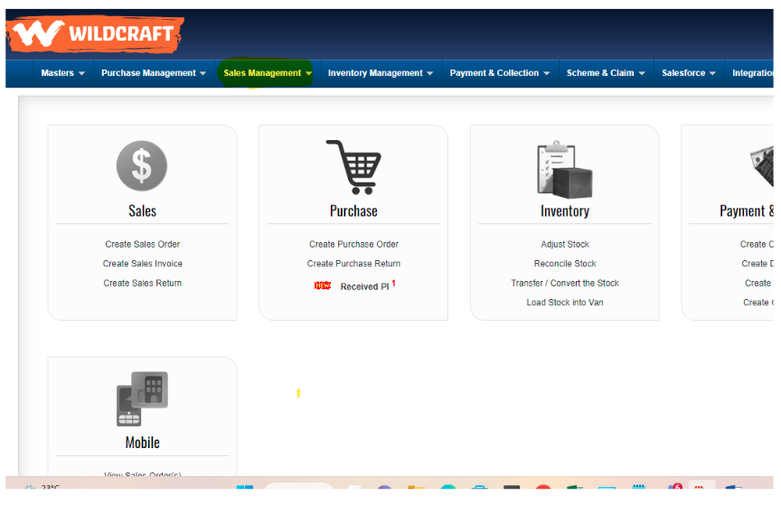
3. In sales management we need to click on → BULK ORDER CONVERSION
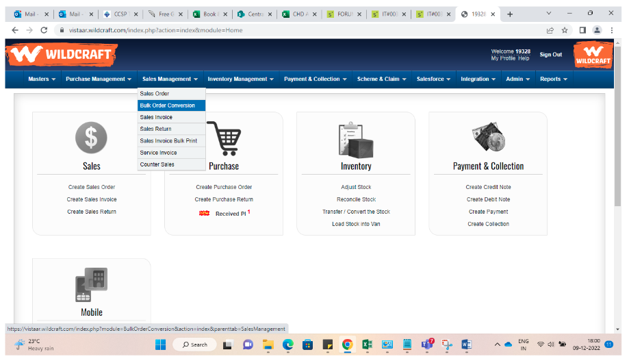
4. Then we need to put From Date and To Date and then click on → POPULATE
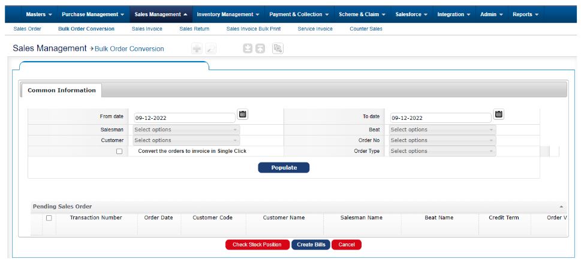
5. Check whether we are getting an error or not
6. If the issue replicates ,Assign this case to development team
7. Once our DEVELOPMENT team has completed the correction, we must provide the customer with
screenshots as proof for closure confirmation.
Short description
CD is Unable to download the Customer master report from Distributor portal.
Severity: IR
Priority: Low
Problem code: Customer Master Edit
Inputs:
1. Login credentials
2. Screenshot of the error
Workflow Analysis template
Step 1: Create the case for the reported issue in our service now portal with required information and
revert back to our customer with the case ID
Step 3: Need to analyse the issue based on the following steps:
1. Go to àDMS portal and put LOGIN ID and PASSWORD of CD
2. After login in DMS, go to → REPORTS
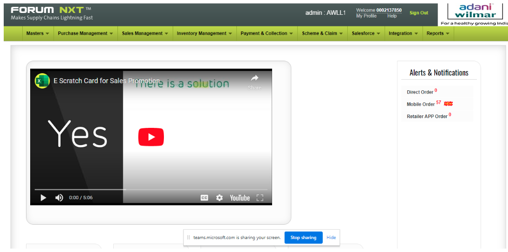
3. In reports find the Customer Master Report
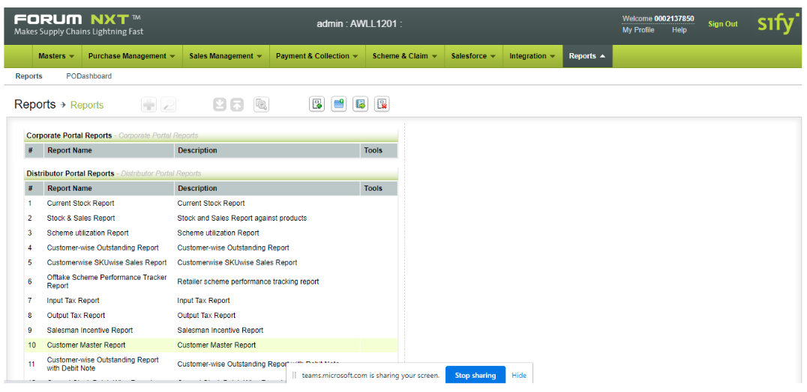
4. Then we need to click on →
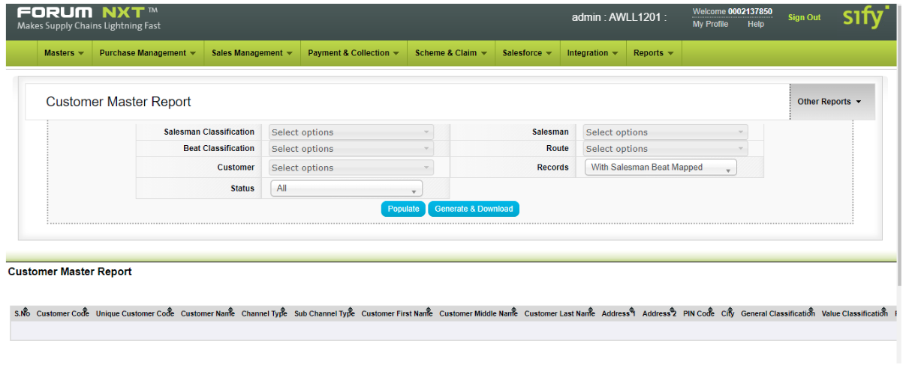
5. Check whether we are getting an error or not
6. If the issue replicates ,Assign this case to development team
7. Once our DEVELOPMENT team has completed the correction, we must provide the customer with
screenshots as proof for closure confirmation.
Kindly find the resolved screed shot:
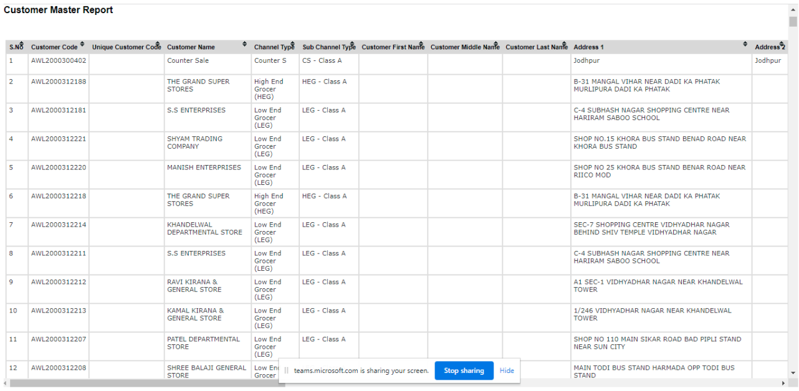
Short description
We have saved Invoice No. 4590726812 Dated. 29-11-2022 Rs.1,30,539.00 Sl. No. 1 MAK Ruby Grease 2 Kg HSN: 271019
: 22G03 3 CS But, while making the bill MAK Ruby Grease - 2 Kg - Not accepting.
Severity: IR
Priority: Low
Problem code: Invoice Related Doubts
Inputs:
1. Login credentials
2. Error screenshot
3. Product name
Workflow Analysis template
Step 1: Create the case for the reported issue in our service now portal with required information and
revert back to our customer with the case ID
Step 3: Need to analyze the issue based on the following steps:
1. Go to → DMS portal and put LOGIN ID and PASSWORD of CD
2. After login in DMS, go to → SALES MANAGEMENT
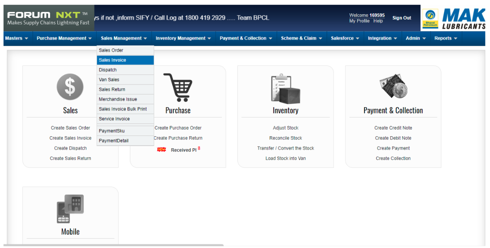
3. In Sales Management àSales Invoice
4. Create new invoice with the given product name
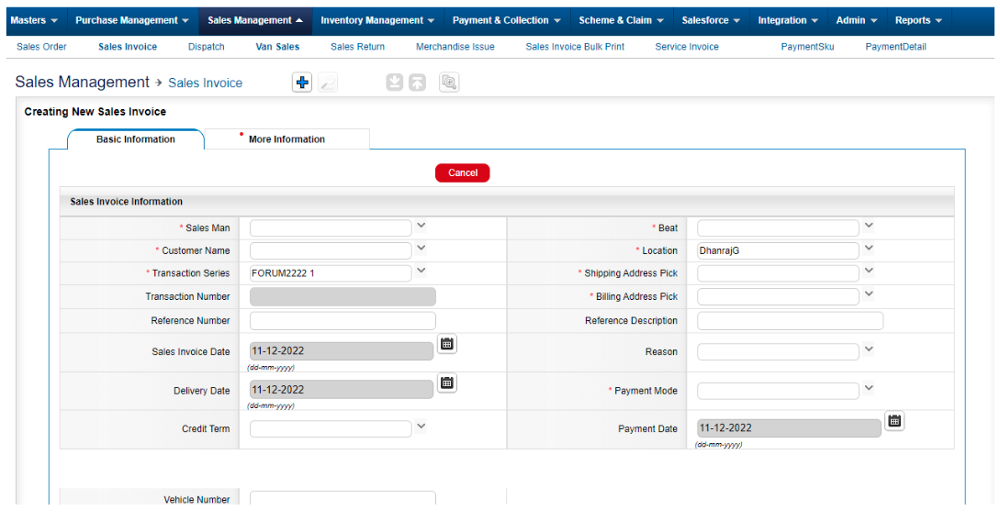
5. Check error is there or not
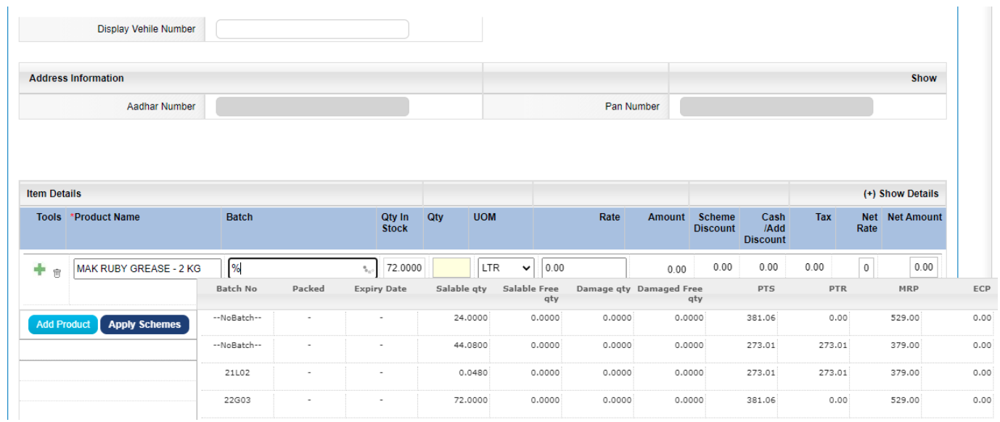
6. Assign this case to development team
7. Once correction is done from our DEVELOPMENT team, then we have to revert to customer with
screenshots for closure confirmation
8. Kindly find the resolved screenshot
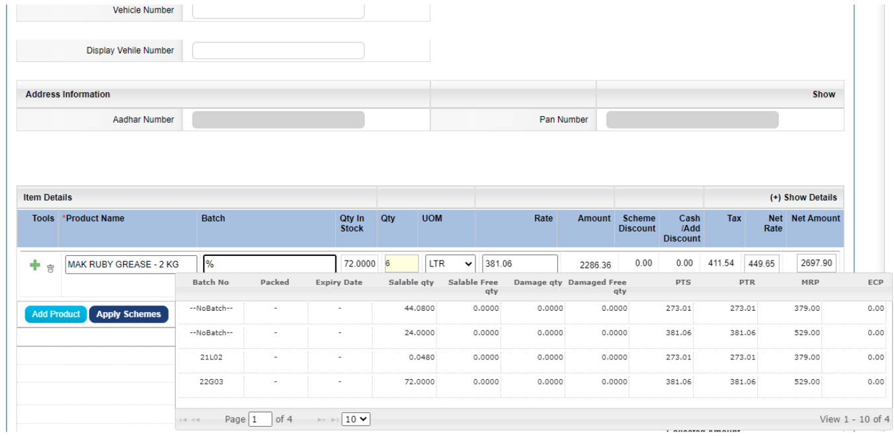
Short description
In the distributor portal report number 30 salesman wise invoice summary report is not generating.
Severity: IR
Priority: Low
Problem code: Others
Inputs:
1. Test Login
2. Ask for the report's name
Workflow Analysis template
Step 1: Create the case for the reported issue in our service now portal with required information and
revert back to our customer with the case ID
Step 3: Need to analyze the issue based on the following steps:
1. Assign this case to development team
2. Once correction is done from our DEVELOPMENT team, then we have to revert to customer with
screenshots for closure confirmation
3. Kindly find the resolved screenshot & Working file
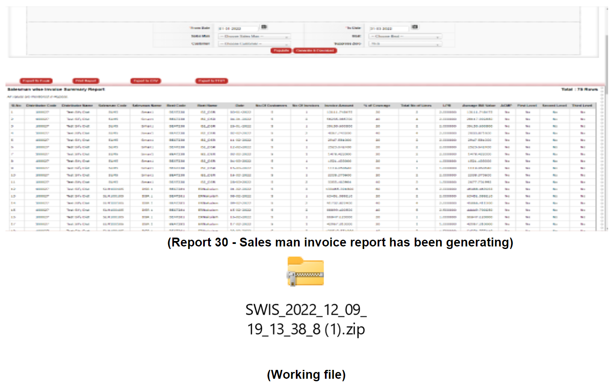
Short description
We are not able to update Salesman details in Forum NXT portal. It is asking to update Salesman category, but no
option is appearing in dropdown.
Severity: IR
Priority: Low
Problem code: Invoice Related Doubts
Inputs:
1. Login credentials
2. Error screenshot
Workflow Analysis template
Step 1: Create the case for the reported issue in our service now portal with required information and
revert back to our customer with the case ID
Step 3: Need to analyse the issue based on the following steps:
1. Go to → DMS portal and put LOGIN ID and PASSWORD of CD
2. After login in DMS, go to → SALES MANAGEMENT
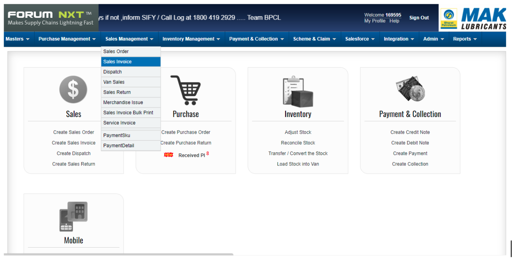
3. In Sales Management → SALES INVOICE
4. Check error is there or not
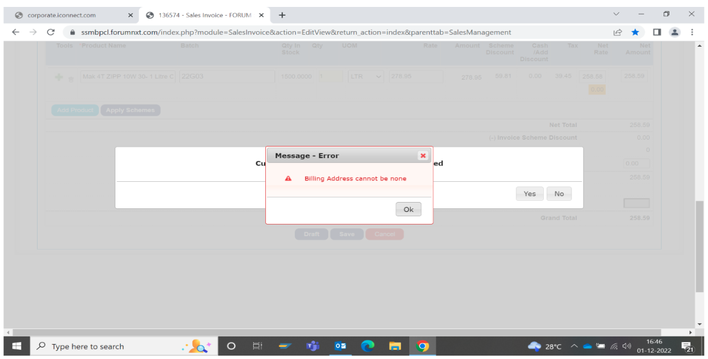
5. Assign this case to development team
6. Once correction is done from our DEVELOPMENT team, then we have to revert to customer with
screenshots for closure confirmation
Kindly find the resolved screenshot
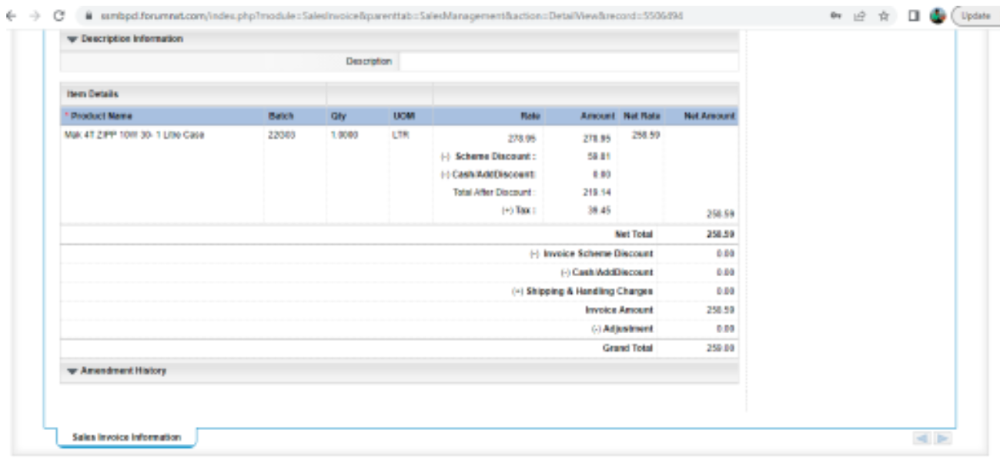
Short description
We are not able to download sales report data from DMS of below customer
Severity: IR
Priority: Low
Problem code: Invoice Related Doubts
Inputs:
1. Login credentials
2. Error screenshot
3. Report name
4. From and to date of the report
Workflow Analysis template
Step 1: Create the case for the reported issue in our service now portal with required information and
revert back to our customer with the case ID
Step 3: Need to analyse the issue based on the following steps:
1. Go to → DMS portal and put LOGIN ID and PASSWORD of CD
2. After login in DMS, go to → REPORTS
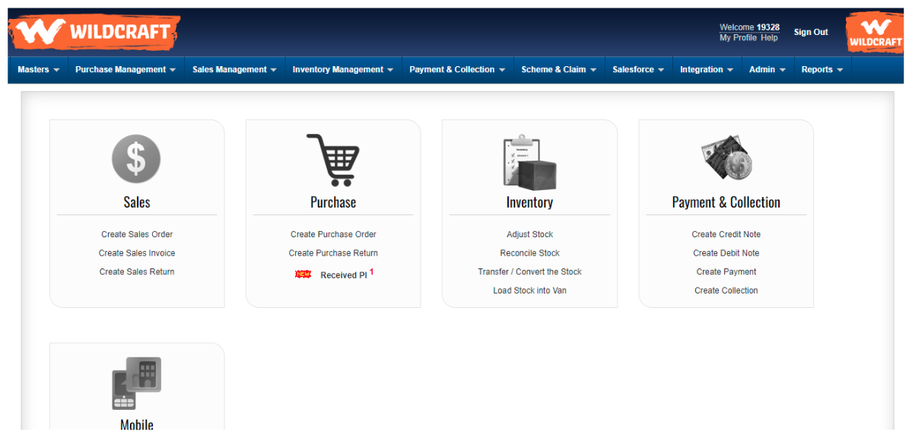
3. In Reports → Find the mentioned report name
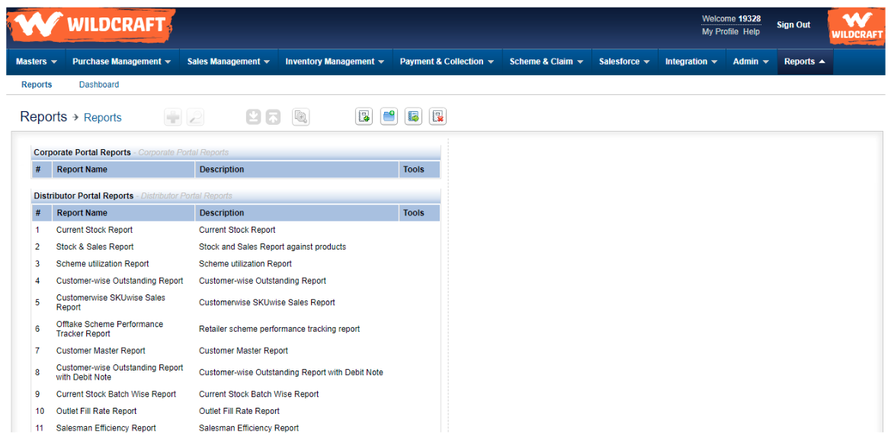
4. After finding report then we need to put from and to date of the report and click on →
Generate & Download
5. Check error is there or not
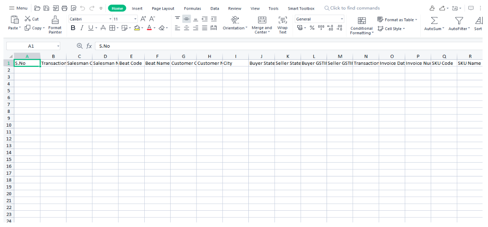
6. Assign this case to development team
7. Once correction is done from our DEVELOPMENT team, then we have to revert to customer with
screenshots for closure confirmation
Kindly find the resolved screenshot
Short description
CD raised a concern regarding GST number need to be updated in the sales invoices
Severity: SR
Priority: Low
Problem code: Service Request
Inputs:
1. Login credentials
2. Invoice number & GST number
3. Customer name
Workflow Analysis template
Step 1: Create the case for the reported issue in our service now portal with required information and
revert back to our customer with the case ID


 3.Verify the collection status:
3.Verify the collection status: